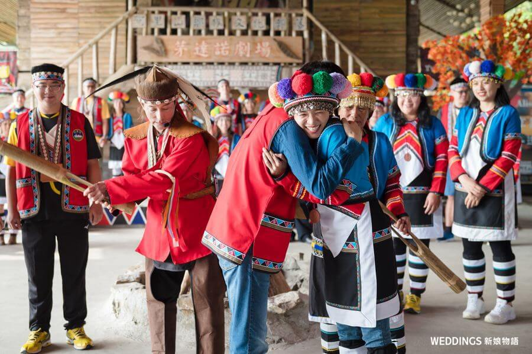
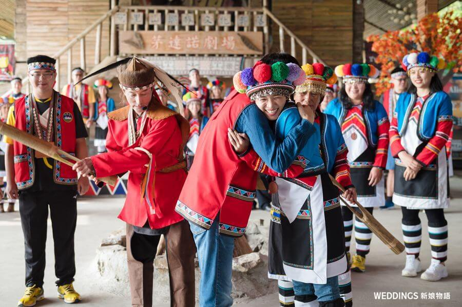

族群介紹
鄒族主要分布在阿里山地區，傳統社會以男子集會所（kuba）為核心， 透過祭典、會議與歌舞來維繫族群記憶與文化傳承。
鄒族的年祭、戰祭等祭典十分重要，族人透過歌唱、擊鼓與舞蹈， 表達對祖靈、自然與部落的敬意，也展現出強烈的群體意識與榮譽感。
地理位置（Google 地圖示意）
景點特色
以下為與鄒族文化、聚落、神話及自然環境相關的重要景點：
| 地點名稱 | 所在縣市 | 特色說明 |
|---|---|---|
| 塔塔加（阿里山山區） | 嘉義縣、南投縣 | 鄒族的傳統領域，許多神話與狩獵文化源自塔塔加地區，是重要的文化地景。 |
| 達邦部落（鄒族文化核心） | 嘉義縣阿里山鄉 | 保留長老會議制度、男子會所「庫巴 Kulubá」等傳統，是鄒族文化保存最完整的部落之一。 |
| 特富野部落 | 嘉義縣阿里山鄉 | 傳統歌舞與信仰豐富，並保存鄒族獨特的樂舞文化與部落建築。 |
飲食文化
鄒族的飲食文化與農耕、狩獵、祭典密切相關，以下列出代表性料理：
| 料理名稱／食物 | 主要食材 | 文化特色說明 |
|---|---|---|
| 小米飯／小米酒 | 小米、糯米、釀酒菌 | 小米是鄒族祭儀與農耕的重要穀物，用於慶典、成人禮及祭祀。 |
| 烤山豬肉（傳統料理） | 山豬肉、野菜、鹽巴 | 反映鄒族狩獵文化的重要性，常在慶典與祭典中招待族人與訪客。 |
| 野菜料理（山棕、過貓等） | 野菜、山藤、野生植物 | 採集自山林的野菜是鄒族飲食的重要元素，展現族人對自然的觀察與尊重。 |
照片與影片介紹
部落／祭典照片
 

以上為鄒族的衣著特色。
影片介紹
以上為鄒族的文化介紹影片。